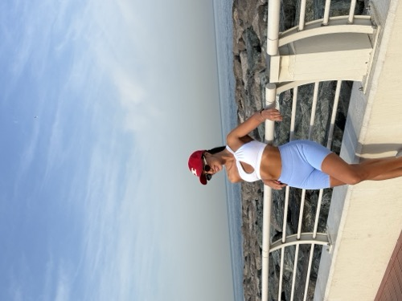

If you're a woman over 30 who's tried every diet and workout plan and the weight is still sitting on your hips, belly, and arms — watch this short video to discover how easy it can be.
For less than a cup of coffee per day
Personal guidance tailored to YOUR body, YOUR goals, YOUR lifestyle. No cookie-cutter plans — just a proven system that works.
Fresh, delicious meal plans delivered every week. Flexible dieting that fits your life — eat the foods you love and still lose weight.
Progressive training programs designed for women. Whether you're at the gym or at home, we've got you covered.
All of this. Every single week. For just $2 a day.
Nancy is a certified nutritionist and fitness coach who has helped over 1,000 women transform their bodies and their lives. Specializing in flexible dieting and sustainable weight loss for women over 30, Nancy's approach is simple: eat the foods you love, train smarter (not harder), and build habits that last a lifetime.
Based in Dubai and coaching women worldwide, Nancy created the $2/Day Program to make professional coaching accessible to everyone.

You're probably spending more than $2/day on things that don't change your life. What if you traded one of them for the body you've always wanted?
Your Coach. Your Plan. Your Transformation.
That's literally it.
Skip one coffee. Change your entire body.
Not sure yet? Try it risk-free. If you don't love it within your first week, we'll make it right.
You get personal coaching from Nancy, weekly meal plans tailored to your preferences and goals, weekly workout programs (gym or home), and access to our supportive community of women on the same journey. Everything is delivered digitally so you can access it anywhere.
Yes, it's a simple monthly subscription — just $2/day. You can cancel anytime with no penalties, no lock-in contracts, and no questions asked.
Absolutely! Nancy's programs are designed for women at every fitness level. Whether you haven't exercised in years or you're looking to take your fitness to the next level, the plans are tailored to where YOU are right now.
Nancy's approach is flexible dieting — you eat the foods YOU enjoy. The meal plans are customizable, and Nancy works with you to ensure everything fits your dietary needs, preferences, and lifestyle.
Most women start noticing changes within the first 2–3 weeks — more energy, better sleep, clothes fitting differently. Visible body composition changes typically show within 4–6 weeks of consistent effort.
Join 1,000+ women who chose themselves. Your coach, your plan, your transformation — for just $2/day.